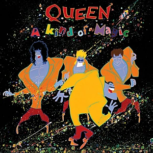
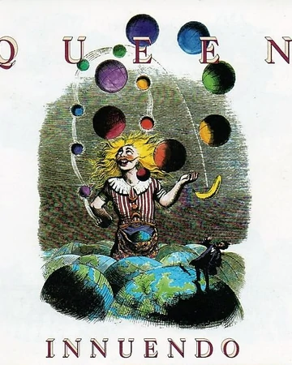

| 1 |
Queen |
|
Queen es el álbum debut de estudio de la banda británica Queen. Publicado el 13 de julio de 1973 por EMI Records en el Reino Unido y por Elektra Records en los Estados Unidos, fue grabado en los estudios Trident y en los estudios De Lane Lea en Londres, coproducido por Roy Thomas Baker, John Anthony y los miembros de la banda. |
| 2 |
Queen II |
 |
Queen II es el segundo álbum de estudio por la banda británica Queen. Fue publicado el 8 de marzo de 1974 por EMI Records en el Reino Unido y por Elektra Records en los Estados Unidos. Fue grabado en los estudios Trident, Londres en agosto de 1973, coproducido por Roy Thomas Baker y Robin Geoffrey Cable. |
| 3 |
Sheer Heart Attack |
 |
Sheer Heart Attack (en español, Certero ataque al corazón) es el tercer álbum de la banda británica de rock Queen, publicado el 8 de noviembre de 1974 por EMI. Fue grabado en los estudios Trident, Wessex, Rockfield y Air (Reino Unido) entre julio y septiembre de ese mismo año y producido por Roy Thomas Baker y Queen. Llegó al número dos de la lista de discos más vendidos en el Reino Unido y al número doce en Estados Unidos. |
| 4 |
A Night at the Opera |
|
A Night at the Opera en español: Una noche en la Ópera es el cuarto álbum de estudio de la banda británica de rock Queen, publicado originalmente en 1975. Coproducido por Roy Thomas Baker y Queen, A Night at the Opera fue, en el tiempo de su lanzamiento, la producción más cara realizada. Un éxito comercial, el álbum es considerado una de las maravillas musicales por grandes canciones como Bohemian Rhapsody o Love of My Life |
| 5 |
A Day at the Races |
 |
A Day at the Races en español: Un día en las carreras es el quinto álbum de la banda británica de rock Queen, que fue lanzado el 10 de diciembre de 1976. Fue el primer álbum producido solo por la banda, después de coproducir sus primeros cuatro álbumes junto a Roy Thomas Baker (Queen, Queen II, Sheer Heart Attack y A Night at the Opera) y John Anthony (Queen). |
| 6 |
News of the World |
 |
News of the World en español: Noticias del mundo— es el sexto álbum de estudio de la banda británica de rock Queen, lanzado el 28 de octubre de 1977. El título del álbum hace referencia al periódico británico News of the World. |
| 7 |
Jazz |
|
Jazz es el séptimo álbum de la banda de rock británica Queen, editado y producido en 1978. Es un trabajo con muchos matices dentro del rock inglés, este en particular es curiosamente llamativo ya que la banda junto a Roy Thomas Baker (coproductor de Jazz y más adelante de Live Killers) logró incluir una rara pero interesante selección de temas, lo que haría de este disco algo único. |
| 8 |
The Game |
|
The Game en español: El juego— es el octavo álbum en estudio de la banda de rock británica Queen, lanzado el 30 de junio de 1980, fue el primer álbum de la banda que alcanzó la primera posición en los Estados Unidos, y el tercero que la alcanzó en Reino Unido. Si bien el álbum tuvo arreglos más simples que otros trabajos de Queen, The Game fue recibido con grandes elogios. Entre las canciones del álbum destacan "Another One Bites the Dust" escrita por John Deacon y "Crazy Little Thing Called Love" escrita por Freddie Mercury, que llegaron a ser éxitos del álbum junto a "Play the Game" y "Save Me". The Game fue el primer álbum de Queen en el que se utilizaron sintetizadores. Si bien no es citado en lista de mejores álbumes de la historia, es uno de los más vendidos de la banda. |
| 9 |
Flash Gordon |
|
Flash Gordon es una banda sonora por la banda de rock británica Queen, para la película de ciencia ficción Flash Gordon. Supone también su noveno álbum de estudio. Todas las canciones del álbum menos "Flash" y "The Hero", son instrumentales. El álbum alcanzó el número 10 en las listas británicas y el número 42 en los Estados Unidos. Curiosamente el álbum fue publicado el mismo día del asesinato de John Lennon. |
| 10 |
Hot Space |
|
Hot Space en español: Espacio caliente— es el décimo álbum del grupo de rock británico Queen. El disco se estrenó en Reino Unido el 21 de mayo de 1982, alcanzando el puesto número 4 en las listas de éxito del Reino Unido y permaneciendo en ellas durante 19 semanas, alcanzó el disco de oro. En Estados Unidos se estrenó el 25 de mayo del mismo año, llegando al puesto 22 y estando en las listas durante 21 semanas, alcanzando el disco de oro también. |
| 11 |
The Works |
|
The Works en español: Las obras es el undécimo álbum de la banda británica Queen. El disco fue grabado en los estudios Record Plant y Musicland entre agosto de 1983 y enero de 1984 y salió a la venta el 27 de febrero de 1984 en el Reino Unido y al día siguiente en Estados Unidos. Esta obra marcó un regreso parcial del grupo a sus raíces dentro de la música rock, aunque este acercamiento fue mucho más ligero. También es el álbum de Queen donde hay un mayor uso de música electrónica. |
| 12 |
A Kind of Magic |
 |
A Kind of Magic (en español: Una especie de magia) es el duodécimo álbum de estudio de Queen, el cual se lanzó a la venta el 2 de junio de 1986 en el Reino Unido y al día siguiente en Estados Unidos. El álbum tuvo gran éxito en Reino Unido, alcanzando el primer puesto en las listas y manteniéndose en éstas unas 63 semanas. El disco en sí es, en su mayoría, la banda sonora de la película Highlander en la cual podemos encontrar sus canciones en este álbum (a excepción de los temas "Pain Is So Close to Pleasure", "Friends Will Be Friends" y "One Vision" que no pertenecen a la película).3Precisamente One Vision pertenece a la banda sonora de la película Iron Eagle. El disco fue producido por Queen, Mack y David Richards. |
| 13 |
The Miracle |
|
The Miracle en español: El milagro es el decimotercer álbum de estudio de la banda británica de rock Queen, lanzado el 22 de mayo de 1989 por Capitol en los Estados Unidos, y Parlophone en el Reino Unido, siendo el primero lanzado por la banda con ésta discográfica |
| 14 |
Innuendo |
 |
Innuendo en español: Insinuación– es el decimocuarto álbum de estudio de la banda de Rock británica Queen, publicado el 4 de febrero de 1991, siendo el último álbum de la banda con su vocalista principal Freddie Mercury,1 quien fallecería meses después por complicaciones derivadas del SIDA. Fue producido por los cuatro integrantes de la banda y David Richards, quien también produjo The Miracle (1989). |
| 15 |
Made in Heaven |
|
Made in Heaven en español: Hecho en el cielo— es el decimoquinto álbum de estudio de la banda británica Queen. De igual forma, supuso el último trabajo editado junto a su vocalista Freddie Mercury y a su bajista John Deacon, quien se retiró del grupo dos años después de la publicación de este disco. Fue lanzado el 6 de noviembre de 1995. |